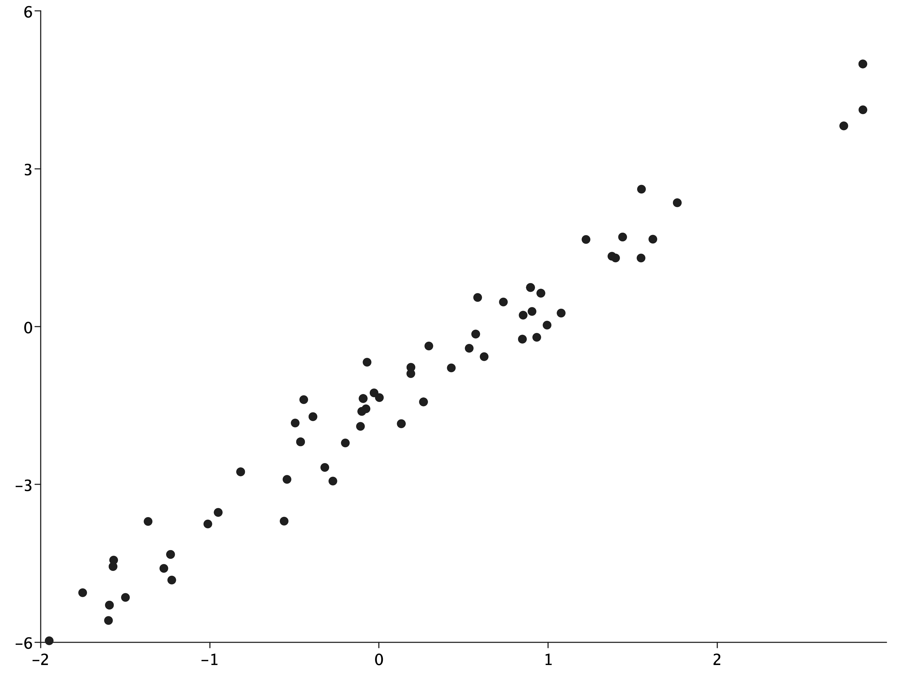

import coursier.MavenRepository
interp.repositories() ++= Seq(MavenRepository(
"http://dl.bintray.com/cibotech/public"
))import coursier.MavenRepository
import coursier.MavenRepository
interp.repositories() ++= Seq(MavenRepository(
"http://dl.bintray.com/cibotech/public"
))import coursier.MavenRepository
import $ivy.`com.stripe::rainier-core:0.2.2`
import com.stripe.rainier.core._
import com.stripe.rainier.sampler._
import $ivy.`com.stripe::rainier-plot:0.2.2`import $ivy.$ import com.stripe.rainier.core._ import com.stripe.rainier.sampler._ import $ivy.$
val (alpha, beta, sigma) = (-1.5, 2.0, 0.5)
// using sampling monad to create synthetic data
val lm = for {
x <- Normal(0, 1).param
y <- Normal(alpha + beta * x, sigma).param
} yield (x, y)
implicit val s = RNG.default
val sims = lm.sample(100)alpha: Double = -1.5 beta: Double = 2.0 sigma: Double = 0.5 lm: RandomVariable[(com.stripe.rainier.compute.Real, com.stripe.rainier.compute.Real)] = com.stripe.rainier.core.RandomVariable@303a2c9e s: RNG = ScalaRNG(1555339946882L) sims: List[(Double, Double)] = List( (-0.27247704057213673, -2.937174139009242), (0.904706738880923, 0.2873337749353697), (0.852183004859444, 0.21651653790799275), (-0.39035717167844597, -1.7128969360400819), (-0.39035717167844597, -1.7128969360400819), (-0.32022958270507923, -2.6778655637209248), (-0.46351051511185715, -2.191504684058077), (-0.46351051511185715, -2.191504684058077), (-0.46351051511185715, -2.191504684058077), (-0.46351051511185715, -2.191504684058077), (1.3771155460388853, 1.3365959279685458), (-0.49530687121967953, -1.833522063303271), (1.0768869181666785, 0.2563581689102623), (1.0768869181666785, 0.2563581689102623), (-1.0116365008420507, -3.752541734789177), (2.7476547917502754, 3.8144224426177082), (2.7476547917502754, 3.8144224426177082), (-1.9494596187935684, -5.97285704598621), (-0.029076281551169814, -1.2606332122515638), (0.8957907429984171, 0.7423301548354151), (0.8957907429984171, 0.7423301548354151), (0.8957907429984171, 0.7423301548354151), (0.8957907429984171, 0.7423301548354151), (0.8957907429984171, 0.7423301548354151), (0.8957907429984171, 0.7423301548354151), (0.8957907429984171, 0.7423301548354151), (0.8957907429984171, 0.7423301548354151), (0.0023588460061185756, -1.3506243761132446), (-0.0935197030194973, -1.3679664205943545), (-0.0935197030194973, -1.3679664205943545), (-0.0935197030194973, -1.3679664205943545), (-0.0935197030194973, -1.3679664205943545), (-0.0935197030194973, -1.3679664205943545), (0.9936677194000182, 0.027360397529156755), (-0.5437438839438696, -2.9048447906186814), (0.5717862996712749, -0.14270893763715198), (0.5717862996712749, -0.14270893763715198), (1.5491575238352386, 1.3029810178933499), ...
import com.cibo.evilplot.numeric.Point
import com.cibo.evilplot.plot._
import com.cibo.evilplot.plot.renderers.PointRenderer
import com.cibo.evilplot.plot.aesthetics.DefaultTheme._
def renderBytes(plot: com.cibo.evilplot.plot.Plot) = {
val baos = new java.io.ByteArrayOutputStream
javax.imageio.ImageIO
.write(
plot.render().asBufferedImage,
"png",
baos)
val array = baos.toByteArray
baos.close
array
}import com.cibo.evilplot.numeric.Point import com.cibo.evilplot.plot._ import com.cibo.evilplot.plot.renderers.PointRenderer import com.cibo.evilplot.plot.aesthetics.DefaultTheme._ defined function renderBytes
import almond.interpreter.api._
DisplayData
.png(renderBytes(ScatterPlot(
sims.map { case (x, y) => Point(x, y) }
).xAxis()
.yAxis()
.frame()
.rightLegend()))
.show()
import almond.interpreter.api._
import com.stripe.rainier.compute._
// import com.stripe.rainier.core._
// import com.stripe.rainier.sampler._
def linearModel(data: Seq[(Double, Double)]): RandomVariable[Map[String, Real]] = for {
alpha <- Normal(0, 5).param
beta <- Normal(0, 5).param
sigma <- LogNormal(2, 2).param
_ <- Predictor[Double].from { x =>
Normal(alpha + beta * x, sigma)
}
.fit(data)
} yield Map("alpha" -> alpha, "beta" -> beta, "sigma" -> sigma)import com.stripe.rainier.compute._ // import com.stripe.rainier.core._ // import com.stripe.rainier.sampler._ defined function linearModel
iters: List[Map[String, Double]] = List( Map( "alpha" -> -1.5103698284824398, "beta" -> 2.1544564171494365, "sigma" -> 0.41662922813248277 ), Map( "alpha" -> -1.5184685380426082, "beta" -> 2.151465637838073, "sigma" -> 0.44342253807901993 ), Map( "alpha" -> -1.4660649259572445, "beta" -> 2.109083551551442, "sigma" -> 0.4400355956497668 ), Map( "alpha" -> -1.4109510885911971, "beta" -> 2.1277107205510815, "sigma" -> 0.4686446685131451 ), Map( "alpha" -> -1.5024888711982174, "beta" -> 2.177295567537438, "sigma" -> 0.4441577745103689 ), Map( "alpha" -> -1.5198813109824225, "beta" -> 2.17897636639043, "sigma" -> 0.5047230361547242 ), Map( "alpha" -> -1.4834223247926301, "beta" -> 2.172806338771708, "sigma" -> 0.48139800434682717 ), Map( "alpha" -> -1.544972407765386, "beta" -> 2.1307286606911577, ...
import com.cibo.evilplot.geometry._
import com.stripe.rainier.plot._
def traces(out: Seq[Map[String, Double]],
truth: Map[String, Double] = Map(),
lagMax: Int = 40,
numBars: Int = 50): Unit =
DisplayData
.png(
EvilTracePlot.renderBytes(
EvilTracePlot.traces(out, truth, lagMax, numBars),
Extent(1200, out.head.keys.size * 300.0)))
.show()
def pairs(out: Seq[Map[String, Double]],
truth: Map[String, Double] = Map(),
numBars: Int = 30): Unit =
DisplayData
.png(
EvilTracePlot.renderBytes(EvilTracePlot.pairs(out, truth, numBars),
Extent(out.head.keys.size * 300.0,
out.head.keys.size * 300.0)))
.show()import com.cibo.evilplot.geometry._ import com.stripe.rainier.plot._ defined function traces defined function pairs